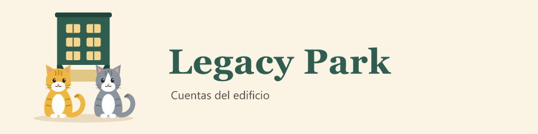

Legacy Park

¿Qué necesitas hacer?
en Safari toca Compartir (el cuadro con la flecha hacia arriba) y luego Agregar a pantalla de inicio.
Abre en este celular el enlace de Legacy Park que te enviamos por WhatsApp. Solo hay que hacerlo una vez.
Ese enlace no es el de Legacy Park. Cópialo completo desde WhatsApp.
Legacy Park